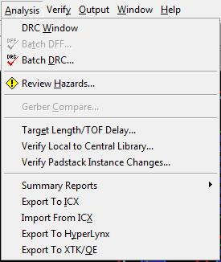
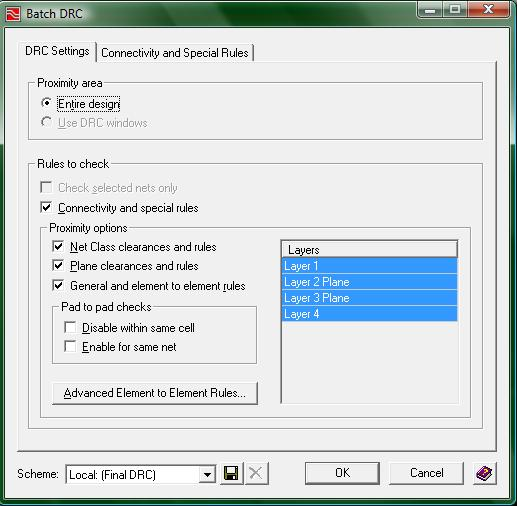
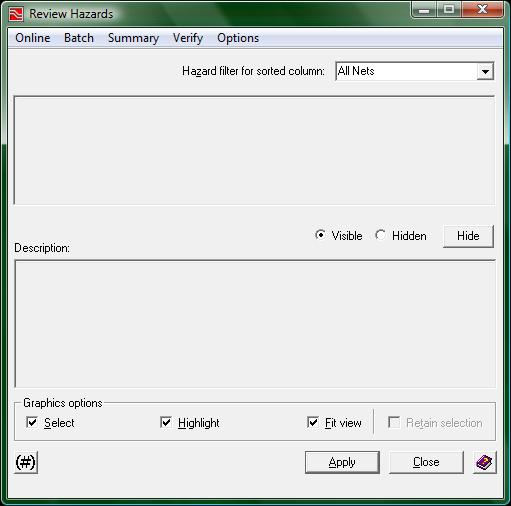
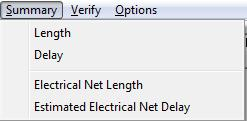
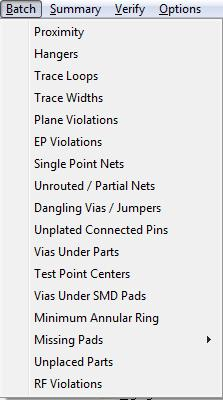

Analysis Menu:
The analysis menu looks like the following:

(1-analysis_menu.jpg)
As you can see the analysis menu gives you access to the "Batch DRC" and the "Review Hazards" windows. These are important when finalizing your board design as they will tell you if you are violating any of the design rules. Make sure to run the DRC regularly throughout the Expedition PCB process to make sure you are not creating more errors when trying to correct a previous error.
Here is what the Batch DRC window looks like:

(2-batch_DRC.jpg)
Now there are some settings you can change through the use of the Batch DRC window, however, if you have loaded the Constraints Editor System with the file provided to you by your instructor (or if it has already been previously loaded), then you will not need to modify anything in this window. By pressing the OK button at the bottom of the Batch DRC window, you will run the DRC on your board. When processing is finished, you will get a message (in the output text area located at the bottom of the Expedition PCB interface) indicating whether errors were found.
After running the DRC, you will probably find that there are several errors. To view these errors, you will need to open up the "Review Hazards" window which looks like the following:

(3-review_hazards.jpg)
The "Review Hazards" window will allow you to view not only the hazards found through the Batch DRC but also other analysis results of your board. These other results are located in the summary menu:

(4-summary_menu.jpg)
The most useful is the length option. Clicking on the "length" option will populate the "Review Hazards" window with all of the lengths of each net in your project. You will then be able to view the length of each wire individually and have the option of trying to shorten your longest wires. What is great about reviewing the length of each net is that when you make a change to your board, the lengths are dynamically updated so that a new longest wire will emerge if you shorten the previous longest. Moving on to the Batch menu:

(5-Batch_menu.jpg)
The batch window has many different errors and warnings results to display; however, you will have to check every single option to find out which errors/warnings you have within your project. Instead, we recommend clicking a small button at the bottom of the "Review Hazards" window that looks like the following:
(6-update_button.jpg)
Clicking that button will change the way the Batch menu looks. If you have errors/warnings in your project after running the batch DRC, click this button and then open up ghe batch window. You will find that each menu item will now have a number listed next to it. The menu options that have a value greater than zero contain errors/warnings that should be taken care of. Errors/warnings that are fixed while using the Review Hazards window will not dynamically update themselves as fixed so if you want to know how many errors/warnings you have taken care of you will need to rerun the batch DRC.